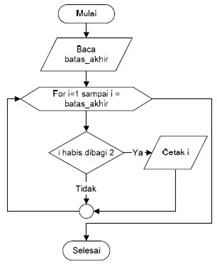
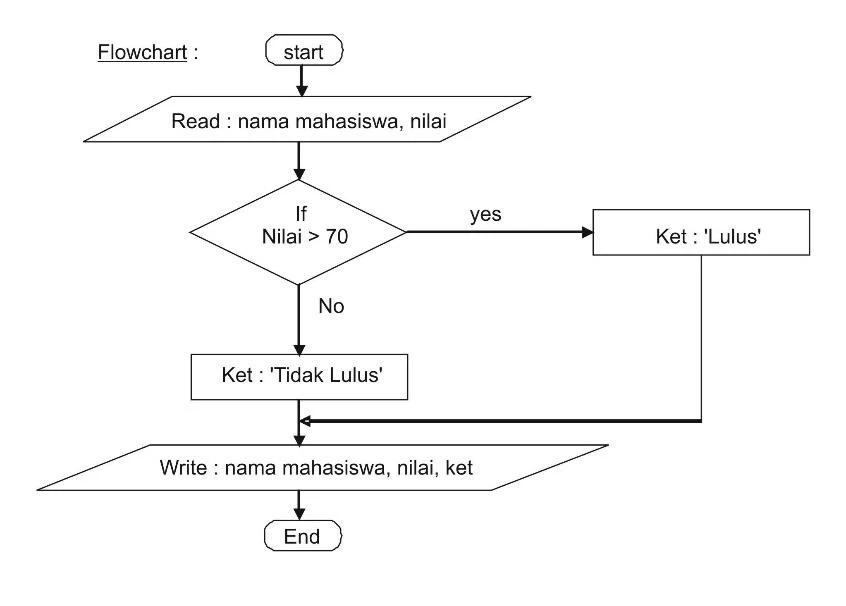

Adi Ramadhan | 10 Min Reading
Adi Ramadhan | 10 Min ReadingBelajar membuat program tentu ada yang namanya struktur dasar bahasa pemrograman, logika dasar pemrograman, algoritma pemrograman, dan lain sebagainnya. Kesemuanya ini tentu harus kita pelajari dengan tepat dan cermat karena belajar pemrograman merupakan sebuah aktivitas membiasakan diri kita untuk membuat program, seperti halnya kita membiasakan diri untuk menggunakan bahasa untuk berbicara. Belajar bahasa baru menuntut kita untuk sering menggunakan bahasa tersebut dan mempraktikannya sesering dan sebanyak mungkin. Selain agar tidak lupa, pembiasaan ini berguna agar seseorang dapat mengucapkan dengan tepat kata-kata yang sedang dipelajarinya.
Selain itu, ketika seseorang sedang belajar menggunakan bahasa baru, tentu orang tersebut harus belajar untuk menyusun kata-kata yang tepat, agar apa yang disampaikannya dapat terkomunikasikan dengan sempurna. Ini pun berlaku bagi orang-orang yang sedang belajar menulis baris-baris program, dengan menggunakan pilihan bahasa yang sesuai dengannnya. Agar dapat menggunakan bahasa pemrograman sesuai dengan apa yang diinginkan, kita harus mengerti struktur dasar bahasa pemrograman yang tepat untuk digunakan. Semakin banyak pilihan bahasa pemrograman yang dipelajari, semakin banyak struktur yang harus dipelajari.
Setiap bahasa pemrograman memiliki struktur dasar bahasa pemrograman yang berbeda-beda, akan tetapi struktur tersebut dapat dimasukan dalam beberapa kategori. Beberapa kategori struktur dasar bahasa pemrograman yang dapat dipelajari oleh pemula adalah.
Merupakan struktur algoritma paling dasar yang berisi rangkaian intruksi yang diproses secara sekuensial, yang artinya dikerjakan satu per satu , mulai dari intruksi pertama sampai intruksi terakhir artinya dimulai dari langkah pertama, kemudian kedua, ketiga, dan seterusnya hingga akhir. Pada dasarnya suatu program memang menjalankan suatu proses dari yang dasar seperti struktur seperti ini.
Kadang kala, saat menjalankan sebuah program, kita harus menjalankan sebuah perintah secara berulang-ulang, agar program dapat berjalan secara berkelanjutan. Struktur ini dapat menjadi pilihan yang tepat untuk membuat sebuah program menjalankan baris-baris perintah secara berulang-ulang.

Dengan menggunakan struktur dasar bahasa pemrograman ini, seorang pembuat program dapat mengatur perintah-perintah dalam programnya agar berjalan secara berulang-ulang hingga pada suatu kondisi dimana syarat untuk perulangannya sudah tidak terpenuhi kembali.
Terdapat beberapa fungsi perulangan yang dapat digunakan untuk membuat struktur program ini, seperti For, While, dan While-do pada bahasa C++. Ketiga fungsi ini dapat digunakan untuk membuat sebuah program untuk menjalankan baris-baris perintah dalam syarat tertentu.
Membuat program juga tidak akan terlepas dari membuat sebuah pilihan dalam menjalankan perintah sesuai dengan syarat tertentu. Pembuat program dapat menggunakan struktur ini untuk membuat sebuah program dengan beberapa pilihan keputusan yang disesuaikan dengan syarat atau kondisi yang dikehendaki.
Sebagai contoh, saat kita ingin melihat apakah lulus atau tidak dalam sebuah mata pelajaran, logikanya adalah jika nilai kita lebih dari 70 maka kita lulus, dan jika kurang dari 70 maka kita tidak lulus. Dalam hal ini, maka kita dapat menggunakan struktur percabangan ini.

Dalam kondisi di atas, kita dapat menggunakan fungsi If-Else atau Switch Case dalam bahasa pemrograman C untuk board Arduino. Sebagai contoh berikut ini contoh struktur percabangan dengan menggunakan fungsi If-Else untuk kasus yang telah disebutkan.
Membuat sebuah program merupakan aktivitas memilih struktur mana yang tepat untuk program tersebut. Sehingga seorang pembuat program harus mengetahui berbagai macam jenis struktur dasar bahasa pemrograman, sebagaimana yang telah dijelaskan di atas. Setelah mengetahui berbagai macam struktur dan fungsi yang dapat digunakan, pembuat program dapat memilih dan menentukan struktur mana yang tepat untuk program yang akan dibuat. Dengan struktur yang tepat maka program yang dibuat akan sesuai dengan yang diinginkan.